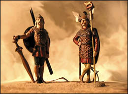

Introduction
Modern Germany came into being in 1871 with
the establishment of the German Empire (Deutsches Reich). However, Germany’s
pre-history starts back in the mists of time when the first people settled
there. In the first millennium before Christ, the Celts inhabited the southern part
of Germany and the eastern part of Gaul (France), with a culture that
in time stretched from Britain and Ireland, into Spain and northern Italy, and
from the German highlands into the Balkans, and with a Celtic colony in Galatia (Turkey).
Unfortunately, the Celts had no written language to tell us about themselves or the
Druid religion that is associated with them. We only find some few
classical contemporary written references to the Celts from early Greek
and Roman authors. The pre-history of Germany’s early people is
therefore a study that falls to the archeologist and the anthropologist
The later migration of Germanic people
from the east is considered by some to be the start of European history. (Greek and Roman
history is considered Mediterranean history.)
There was an overlap of German and Mediterranean
history and there were events that happened with the Romans that caused great changes
to the Germanic people. So we start our time line with the Romans.
“... the warlike Germans,
who first resisted, then invaded, and at length overturned the Western monarchy of
Rome, will occupy a much more important place in this history, and possess a stronger,
and, if we may use the expression, a more domestic, claim to our attention and regard.
The most civilized nations of modern Europe issued from the woods of Germany; and in the
rude institutions of those barbarians we may still distinguish the original principles
of our present laws and manners.”
Edward Gibbon,
The History of The Decline and Fall of the
Roman Empire, Chapter IX.
|
Imperial Rome, Gaul, & Germania
59-58 BC. Julius Caesar campaigns in Gaul.
When Caesar came to Gaul, the Romans were
already in control of the southern most part, Gallia Narbonensis (from 121 BC) which
today we know as Provence in France.
It was the main province of the Roman Empire. The rest of Gaul was free and divided
among Celtic tribes.
The main Celtic tribes north of Provence were
the rival Aedui and the Sequani. The Aedui had been more receptive to Roman influence.
The Sequani made an alliance with some Germans and with their help defeated the Aedui
tribes. The Sequani established themselves as the leading tribe in Gaul.
The Arverni were allies of the Sequani.
An Arverni chief, Celtius, proclaimed himself King of all free Gaul.
He was soon murdered; his son Vercingetorix blamed the Romans. He organized a
rebellion against the Romans. Julius Caesar moved against Vercingetorix and eventually
Vercingetorix surrendered and Gaul was in Roman hands.
58 BC. Caesar campaigns against the
Helvetic.
57 BC. Caesar campaigns against the
Belgic.
55 BC. Caesar crosses the Rhine to punish
the tribes that had helped the Gauls.
55 BC. Caesar campaigns in Britain.
54-51 BC. Caesar’s reconquest of
Gaul.
44 BC. Julius Caesar assassinated.
12 BC. Rome pushes
across the Rhine from Gaul.
9 BC. Roman legions reach Elbe.
------
9 AD. The Teutoburg
Massacre (the Varus Battle)
During the reign of Augustus Caesar, three
Roman legions are destroyed in the Teutoburg Forest (Teutoberger Wald), Germania
Inferior, during a revolt led by
Arminius (sometimes called Hermann). Arminius, a Cherusci chief who had
served in the Roman army in a Germanic auxiliary
is considered a German national hero. After this Roman defeat, few Roman armies
dared to cross over the Rhine, except in response to German raids.
15. Germanicus Caesar invades Germany.
In 16, Germanicus defeats Arminius but is called back to
Rome and his military gains are lost. In 19, Arminius was slain by his relatives.
74. In Germania Superior, Vespasian
Caesar establishes control
over Agri Decumates (between the Rhine and Danube Rivers). Later, under his son Domitian,
fortifications (Limes) were erected as far as Neckar Valley and the Tannus Mountains.
( Map)
While German areas protected by the static
Limes set a defensive boundary for the Romans, and some areas behind the Limes became
somewhat Romanized, greater Germany remained un-Romanized. Hence the German
language remained old German, even with all its variations.
132. Diaspora.
Jewish rebellion in Judaea against Roman
occupation leads to diaspora (dispersal of Jews). 1800 hundred years later,
the “wandering” Jews are caught up in Nazi Germany’s “Final
Solution.”
ca146. Antoninus Pius advances frontier
Limes in some areas for another 20 miles.
235. Alexander Severus is
killed in Germany.
Alexander moves to Moguntiacum
(Mainz), the capital of Upper Germany (234). Alexander negotiates for peace by bribing
the Germans. This policy outrages the soldiers, who mutiny in mid March 235 and kill
the emperor.
235. Maximinus campaigns against the
Germans.
The new emperor regains the
district of the Agri Decumates and concentrates on exacting revenge against the
Germans with ruthless military campaigns across the Rhine.
260. A bad year for the Romans.
The Franks
cross the Rhine river and invaded Gaul, the Alamanni destroyed the Limes in Southwest
and Southern Germany invading the Agri Decumates. All Roman forts, watchtowers
and civil settlements
the Limes from the Rhine to the Danube are destroyed or abandoned. Thus was the end
of the Roman German Limes.
Roman towns with “ Colony Status” along the lower
Rhine River.
Colonia Ulpia Traiana (Xanten).
A Rome town in Germania Inferior (Lower Germany,
now in North Rhine-Westphalia,
Deutsche, Nordrhein-Westfalen).
During the time of Augustus Caesar the
first military fortress Vetera I was established on the Fuerstenberg. The fortress
acted as a base for the conquest of East-Rheinland Germany. Following the defeat
in the battle of Teutoburg Forest, the Rhine river became the border of the Roman
Empire. During the revolt of the native Batavians, Vetera I was destroyed. Vetera II
was constructed at a new site. A legion was stationed here from 70 to 270.
The civilian settlement was elevated to the rank of colony around 100. The
expansion of the Franks ended the town’s period of prosperity in 276.
Colonia Claudia Ara Agrippinensium
(Cologne).
A Rome town in Germania Inferior (Lower Germany,
now North Rhine-Westphalia, Deutsche, Köln, Nordrhein-Westfalen).
Starting in 260, Cologne was almost constantly
besieged by the Franks, leading to the ultimate abandonment of Cologne by the Romans.
The last Roman governor left Cologne in 425. Soon after, the Franks take over Cologne
from the Romans.

Franks, by Rose Miniatures.
The Franks & the Great Frankish Empire
The Franks, a Germanic people, challenged, and later
displaced the imploding Roman Empire. Modern Germany and France find their origins
with the Franks.
407. Roman Gaul invaded.
The Franks, Vandals, &c., flood
over Gaul. In order to stop the rampages of the Goths in Italy, Roman General Stilchio recalled the frontier garrisons,
along the Rhine. This allowed the Alans, Suebi and Vandals to cross the frozen river umimpeded in the winter of 406-497 and
sweep across Europe. Roman rule practically ceases and the three kingdoms of the Franks,
Visigoths and Burgundians begin to form.
481. Clovis (Chlodwig)
inherits his father’s
Frankish kingdom.
486. Clovis defeates a Roman army under
Syagrius at Soissons, thus establishes Frankish ascendancy over northern Gaul and ends the
last vestige of Roman rule in Gaul.
500. Clovis conquers Burgundy in
southeastern Gaul.
507. Clovis conquers Aquitaine in
southwestern Gaul.
511. Byzantine Emperor appoints
Clovis to preside over the Christian Council of
Orleans, adding legitimacy to his rule. The Merovingian dynasty of Frankish kings
is established, to rule Frankish northern Europe.
562. Avars (from Mongolia) invade
Frankish lands.
688. Charles Martel born.
732. Charles Martel halts Muslim
advance into France.
741. Charles Martel dies.
771-814, Charlemagne’s Frankish
Carolingian Empire
742. Charlemagne
(Charles the Great, Karl der Grosse) is born.
768. The Frankish Empire is split.
Pepin the Short, son of Charles Martel,
and Mayor of the Palace of the whole Frankish kingdom dies. In the manner of the
Franks, Carloman and his brother Charlemagne inherit
the kingdom of the Franks.
771. Carloman dies.
The control of the whole Frankish Empire is
reestablished under Charlemagne.
772. Charlemagne begins a series of
wars with the Saxons.
773. Charlemagne defends the Papal states.
Charlemagne, at the request of Pope Hadrian II to protect the Papal states, takes
Pavia, assumes
the crown of Lombardy, confirms the Donation of Pepin, and accepts the role of protector
of the Church in all her temporal powers. .
782. Saxons launch suprise attacks on
the Franks.
Charlemagne responds by executing over
4,000 Saxon prisoners in one day.
785. Charlemagne subdues the Saxons.
796. Charlemagne destroys the Avar state.
800. Charlemagne
crowned emperor in Rome.
804. Charlemagne conquers Saxonia
after nearly thirty years of intermittent warfare.
814. Charlemagne
dies in Aachen (now in Germany).
814. Louis the Pious.
The Carolingian Empire passes to Charlemagne’s son, Louis.
843, the Carolingian Empire Divides
843. Treaty of Verdun and the
Dissolution of the Frankish State.
Charlemagne’s grandchildren divide the
empire: Lothar receives the central territories; Charles the Bold, the western
territories;
Ludwig the German, the eastern territories.
855. Emperor Lothar I
dies.
870. Formation
of the duchies of Franconia, Saxony, Bavaria, Swabia.
900. Lorraine (Lothringen) becomes a
dependency of the Eastern Frankish Kingdom.
911. Upon extinction
of the Carolingians, Conrad of Franconia became King of Germany.
919. The Saxon Duke, Henry I,
elected king. The Saxon dynasty ruled Germany until 1024.
955. Otto I defeated the
Hungarians at Lechfeld near Augsburg.
962-1806, Holy Roman Empire (First Reich)
962. Otto I was crowned Emperor
in Rome and was recognized by Byzantium.
1190. The Teutonic
Order was founded in Akko (Acre).
1282. The first mention
of a “Hansa Almaniae” appears in matters concerning the
London trading post.
The Hansa, or Hanseatic League, was a merchants alliance of low German
towns stretching eastward into the Baltic.
1293. Lübeck becomes the
leading city of the Hanseatic League.
1348-1352. The Plague (black death).
1370. Victory of the Hanseatic
League over the Danes.
1454-1455. Gutenberg Bible printed
in Mainz Germany.
1483. Martin Luther born.
1484. Papal Bull condemns withcraft.
Inquisitors sent to Germany.
1499. Switzerland breaks away from the
empire.
1517. Martin Luther posts his 95 Theses
in Wittenberg.
1517. Protestant Reformation
This is
our tentative date for the start of the Protestant Reformation. Usually this time
frame for the Reformation is given as: early 1500s to mid 1600s. Great Christian
but non-Catholic religions grew from the various Reformation religious movements;
Lutheran, Dutch Reformed, German Reformed, Swiss Reformed, Presbyterian, Protestant
(Calvinist), Puritan.
1521. Diet of Worms. Martin Luther
refuses to back down.
1531. Schmalkaldic League.
1546-1547. Schmalkaldic War.
The Schmalkaldic League is defeated at the
Battle of Mühlberg, and its leaders are captured (1547).
1551-1552. The Protestant
League is created to defend the Lutheran territories.
1555. Peace of Augsburg.
1618-1648. Thirty Years War in Germany.
1756-1763. Seven Years War, a.k.a.,
the French and Indian War
1792-1815, Napoleonic Wars
1792. The 1st
Coalition was formed against
Revolutionary France by Austria and Prussia and their troops were mobilized.
1793. Britain, Spain, and
Holland (The United Provinces) declared war on France.
1797. Treaty of Campo Formio
The Austrians
and French sign the Treaty of Campo Formio, giving France possession of Belgium,
the Rhineland, and virtual control of Northern Italy.
1806-1813. The
Confederation of the Rhine.
In 1806, sixteen German states ally themselves
with France. Nineteen more join later. The major states are Baden, Bavaria, Saxony,
Westphalia, Württemburg, and the Duchy of Warsaw.
The minor states are Cleve-Berg, Hesse-Darmstadt,
Anhalt-Bernburg, Anhalt-Dessau, Anhalt-Kothen, Hohenzollern-Hechingen,
Hohernzoller-Sigmaringen, Isenburg, Leyen, Leichtenstein, Mecklinburg-Schwerin,
Mecklenburg-Strelitz, Ebersdorf, Gera, Gtreiz, Lobenstein, Schleiz,
Saxe-Coburg-Saalfield, Saxe-Gotha-Altenburg, Saxe-Hildburghausen, Saxe-Meningen,
Saxe-Weimar, Schaumburg-Lippe, Schwarburg-Rudolstadt, Schwarzburg-Sonderhausen,
Waldeck, Wurzburg, Erfurt and Frankfurt.
1813-1815. Liberation
Wars against Napoleonic France.
After Napoleon’s invasion of Russia
and the Allied victory at Leipzig, many of the Confederation of the Rhine switch
sides to help the Allies.
1815-1866, German Confederation
1834. German Customs Union founded.
1861. Wilhelm I becomes King of Prussia.
1862. Otto von Bismarck appointed
prime minister.
Bismark became known as the Iron Chancellor.
From the time of
Bismark’s appointment until the death of Wilhelm I, Bismarck guided the
course of Prussia and
Germany with an iron hand.
1866. Austro-Prussian War, a.k.a.,
Seven Weeks War.
(15 June-23-August 1866) This war was
deliberately
provoked by Bismarck, over the objections of Wilhelm I in order to expel
Austria from the German Confederation as a step toward the unification of Germany under
Prussian dominance.
Prussia was allied with Italy and a few small North German states; Austria was seconded by Bavaria,
Württemberg, Saxony, Hanover, Baden, and several smaller German states. Prussia
quickly occupied Hanover, Electoral Hesse, Nassau, and Frankfurt. The Prussians then pushed into Bohemia
and destroyed the Austrians in the battle of Koniggratz on (3 July).
This war set the stage for the
1871 establishment of the German Empire and the reorientation of Austria (Austro-Hungarian
Monarchy) toward the east.
1867-1871, North German Confederation
1870-1871, Franco-Prussian War
1871. France declares war on Germany.
French advisors to Emperor Napoleon III,
fearful of Prussia’s rise in military power and their being manipulated by the
Prussian Prime Minister, Otto von Bismark, convince the Emperor to declare war
on Germany (19 July).
Bismark uses the Declaration of War
to induce the non-member southern German states to join the North German
Confederation.
1870 Germans crosses the border into Alsace (4 August).
Emperor Napoleon III and 100,000 of his men are
captured. (1 September). Paris surrounded by the Germans (19 September) and sieged.
1871. Wilhelm I crowned.
Prussian King Wilhelm is crowned Emperor Wilhelm I
of the new united German Empire in the Hall of Mirrors at Versailles (18 Jan).
1871. 1871 Paris, taken (28 January).
The French assembly accepts the preliminary
peace agreement (Mar. 1), later formalized in the Treaty of Frankfurt (21 May).
France agrees to pay an indemnity of $1 billion within three years. Alsace, except
the Territory of Belfort, and a large part of Lorraine were ceded to Germany.
These were both border provinces and there were already large numbers of
German speaking people in both provinces, especially Alsace.
Prussian militarism had triumphed in Germany
and was thus to be the foundation of the new German Empire.
1871-1918, German Empire, Second Reich
(Deutsches Reich, Kaiserreich)
1871. Wilhelm I heads the German Empire.
1872-1880. Bismarck’s cultural
struggle (“Kulturkampf”) against the Catholic Church.
1880s-1899. Germany establishes
colonies in Africa, South Pacific, and China.
1884-1885. The Conference of Berlin.
Major European nations and the United States
convene in Berlin (15 Nov 1884 - 26 Feb 1885) to settle questions of colonial
expansion in the Congo River basin in Central Africa. The Convention recognizes
the claim of Belgium King Leopold II to rule the Congo Free State.
1888. Wilhelm I dies.
1890. Wilhelm II dismisses Bismarck.
1890. Anglo-German Treaty.
Zanzibar and the future Tanganyika are
divided: Britain obtains the future Uganda and
recognition of its interest in Zanzibar and Pemba
in exchange for ceding the strategic
North Sea island of Heligoland (Helgoland)
and non-interference in Germany’s
acquisitions in Tanganyika, Rwanda, and Urundi.
1898. Otto von Bismark dies.
1914. Outbreak of World War I.
1918. Germany surrenders.
With no enemy troops on its soil, but totally exhausted,
Germany was forced to accept the Allied armistice terms (Nov 1918).
1918. Wilhelm II abdicates and flees
(Nov 1918).
1919-1933, Weimar Republic
1934-1945, Third Reich
1935. Anti-Jewish “Nuremberg
Laws.”
1939. German-Soviet Union non-aggression
pact.
1939. Germany’s attack on Poland,
beginning of World War II.
1940. Germany invades and occupies
Denmark.
1940. Himmler orders the establishment
of a concentration camp at Auschwitz.
1940. The ghetto at Lodz, Poland, is
sealed off.
1940. Germany invaded Holland, Belgium,
and France.
1940. Marshal Petain surrenders France
to the Germans.
1941. The Berlin-Rome-Tokyo Axis was
established.
1941. The Warsaw Ghetto is sealed off.
1941. Germany invades Greece and
Yugoslavia.
1941. Germany attacks and declares
war on the Soviet Union.
1941. Germany declares war on the
United States.
1942. Wannsee Conference, Berlin.
This conference was held to discuss and coordinate
the implementation of the Final Solution. Adolf Hitler’s decision to solve the
so-called Jewish question through systematic eradication of European Jewry
was officially sanctioned.
1944. The Allies invaded France at
Normandy (June 1, D-Day).
1945. Yalta Conference (4-11 Feb).
1945. Dresden is bombed, many incendiary
bombs are used. Upwards from 35,000 civilians are killed. (13-14 Feb)
1945. Unconditional surrender and
occupation of Germany.
1945-1949, Occupation, & the Start of the
Cold War
1945. Withdrawal of British and
American troops from East Germany; Western troops entered
Berlin.
1945. Berlin Declaration by the Allies
assuming supreme powers in Germany.
1945. Potsdam Conference on Germany.
1946. Currency Reform in Western zones
(introduction of the Deutsche Mark).
1946. In a speech, Sir Winston
Churchill warns of an implacable threat that lay behind a Communist “Iron
Curtain.”
1947. Marshall Plan, a.k.a.,
European Recovery Program.
1948. Start of Berlin Airlift
(Luftbrücke) after Soviets blockaded all land access to
Berlin.
1949. Berlin Blockade is lifted
by Soviets.
1949-1990, Federal Republic of Germany (FRG-BRD)
& the German Democratic Republic (DDR)
1949. German parliament makes
Bonn the provisional capital of the Federal Republic.
1950. End of Food Rationing in
West Germany.
1955. State of Saar established by
Referendum.
1957. The Saar returns to
Germany as a Land, to be followed in 3 years by economic reintegration.
1957. The Treaty of Rome
European Economic Community established.
1961. Beginning of the Berlin Wall.
1963. “Ich bin ein Berliner.”
“All free men, wherever they may live, are citizens of Berlin. And
therefore as a free man, I take pride
in the words: Ich bin ein Berliner.” From a speech by US President
John F. Kennedy given
at the Berlin City Hall.
1987. “Mr. Gorbachev,
tear down this wall!”
US President Reagan’s challenge
to USSR General Secretary Gorbachev, from a speech given at the Brandenburg
Gate, West Berlin, Germany.
1989. The Berlin Wall and the border
to the Federal Republic of Germany are opened after 28 years.
1990 Unification Treaty
1990. 3 October “Day of German
Unity.”
The GDR comes under the jurisdiction
of the Basic Law and ceases to exist. Germany
is united as one nation. (Map)
1999. Germany reopens renovated
Reichstag in Berlin.
2002. Introduction of Euro currency,
the old Deutsch Mark eliminated.
|
|
{kind=link}